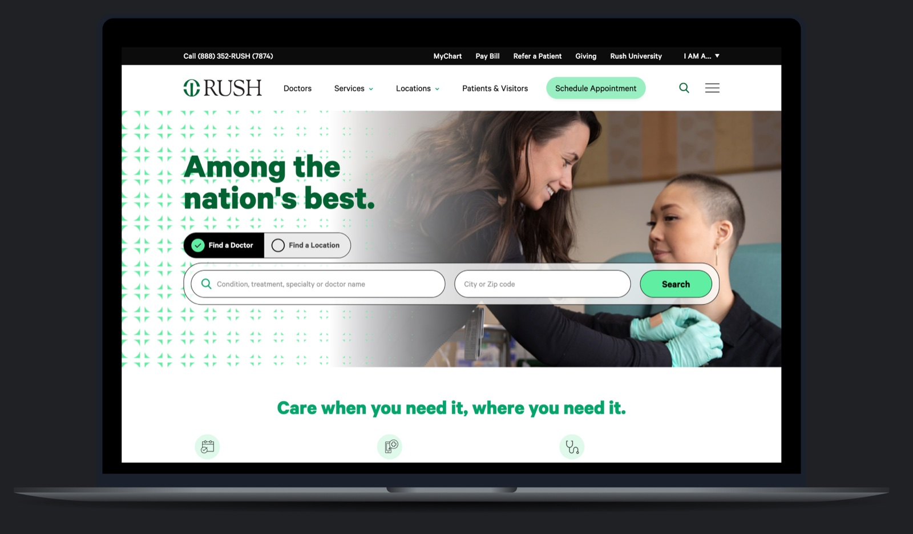
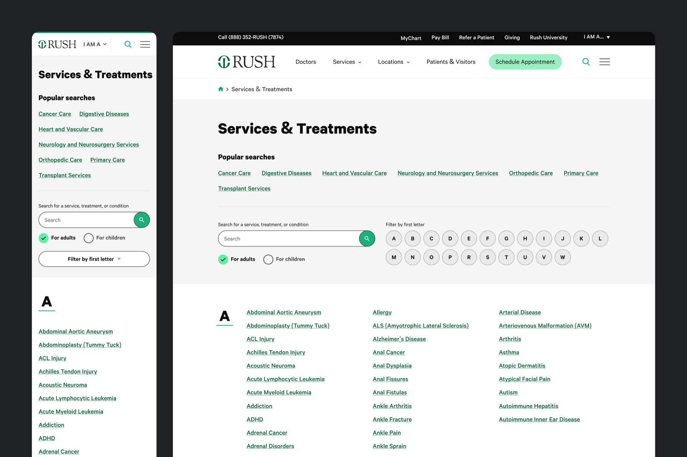
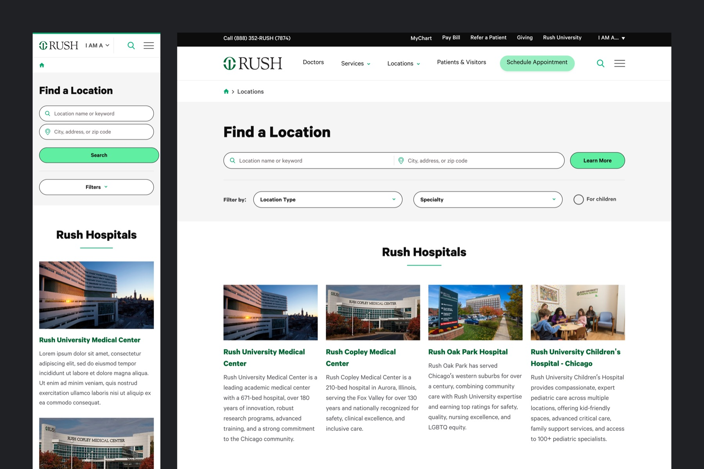
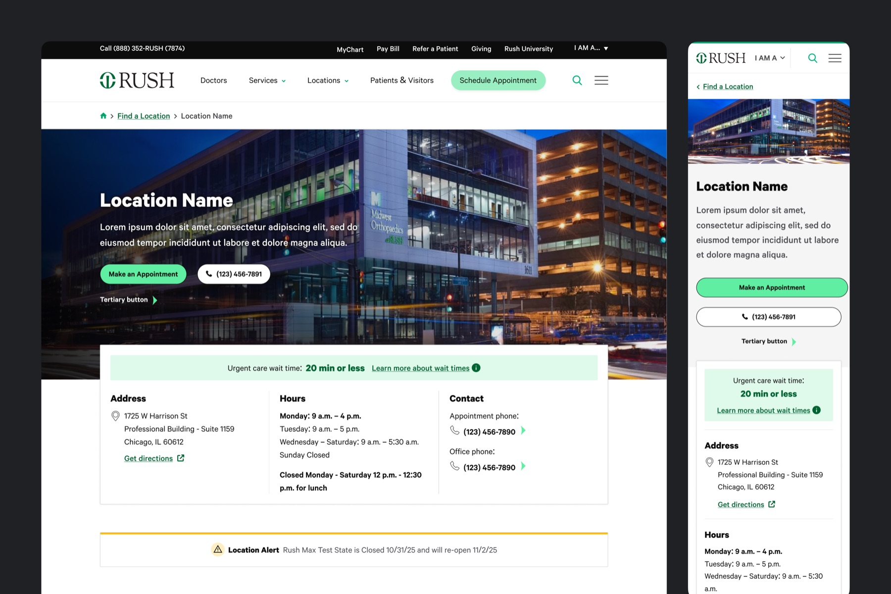

Shaping the Digital Experience of an Academic Health System
Partnered with Rush University Medical Center to improve critical patient and provider journeys across a large, multi-brand healthcare platform.

Overview
Rush University Medical Center is a leading academic health system serving patients, providers, researchers, and students through a large network of hospitals, clinics, and university programs. As Rush expanded its digital services, its website became an increasingly important entry point for accessing care, finding information, and connecting with the organization.
Over the course of a multi-year partnership, I served as the lead product designer responsible for improving some of the system's most important user journeys. Working as an embedded member of the product team, I helped shape both the user experience and the long-term direction of the platform as new initiatives were introduced.
The Challenge
Rush's website supported a wide range of audiences with very different goals. Patients needed to quickly locate care and schedule appointments. Referring providers needed efficient access to specialists. Researchers searched for active clinical trials, while prospective students explored academic programs.
Years of incremental growth had created inconsistent navigation, duplicated patterns, and complex workflows that made important information difficult to find.
At the same time, Rush was introducing new digital care experiences through Rush Connect, including virtual care and expanded online access. The website needed to evolve alongside these services, making it easier for users to discover and access care while maintaining a consistent experience across multiple brands and audiences.
My Role
As the lead product designer, I partnered closely with stakeholders to identify high-impact opportunities, prioritize work across an evolving roadmap, and deliver solutions from discovery through implementation.
Key initiatives included:
- Redesigning the Find a Location experience to help patients find facilities by specialty, proximity, and available services.
- Improving Location Detail Pages with clearer information hierarchy, stronger trust signals, and more prominent calls to action.
- Simplifying the Clinical Trials experience so patients and researchers could more easily search and understand available studies.
- Added to the scalable Appointment Hub templates that provided consistent entry points into scheduling across multiple service lines.
- Modernizing News and Article templates to improve readability, content discovery, and credibility.
Each solution needed to balance the needs of multiple audiences while remaining consistent with Rush's broader digital ecosystem and established design system.
Process
Rather than working within a traditional project with a fixed scope, I operated as part of Rush's ongoing product team, collaborating through continuous discovery, design, development, and release cycles.
My responsibilities included:
- Conducting heuristic evaluations, stakeholder workshops, and competitive analysis to identify opportunities and prioritize the roadmap.
- Designing within Rush's established design system while expanding reusable patterns for future work.
- Partnering closely with engineering and QA throughout implementation to ensure designs were translated accurately into production.
- Incorporating accessibility throughout the design process, with attention to keyboard navigation, color contrast, semantic structure, and screen reader support.
This collaborative approach allowed the team to continuously improve the platform instead of treating each initiative as an isolated redesign.
Strategic Impact
As the partnership matured, my role expanded beyond designing individual features. I became a strategic partner in helping align the website roadmap with Rush's broader digital initiatives, ensuring new designs could be introduced through intuitive and consistent user experiences.
The success of the engagement led to additional contracted work across multiple fiscal years, reflecting the value of the partnership and the trust built with stakeholders.
Outcome
View live siteThe engagement delivered value beyond individual feature launches, improving the experience for patients and providers while supporting a more consistent and scalable platform.
Key Contributions
- Improved usability across several of Rush's highest-traffic patient and provider experiences.
- Increased consistency across a large, multi-brand healthcare ecosystem through scalable design patterns.
- Helped support the rollout of new digital care initiatives by creating clearer pathways into online services.
- Strengthened the client relationship, resulting in an expanded multi-year engagement.
- Contributed to a website that received a Gold Davey Award for excellence in digital experience.
*Specific metrics, business data, and internal strategy details have been omitted due to confidentiality.


